Com preparar i dirigir l’Estudi de La Torre de Guaita a temps
Versió 4.0 · novembre del 2026
⚠ Dues advertències importants
Dirigeix sempre amb la publicació original. Encara que l’aplicació mostra els paràgrafs i les preguntes, només ho fa per calcular els temps. Qui dirigeix no s’ha de guiar mai pel contingut que apareix al temporitzador: per presentar la informació a l’auditori fes servir sempre l’aplicació JW Library o la revista La Torre de Guaita impresa.
Durant l’estudi, fes servir el mode presentació. És la manera recomanada d’utilitzar el temporitzador mentre dirigeixes, perquè evita distraccions: mostra només el necessari, amb els colors verd, groc i vermell per saber d’un cop d’ull com vas de temps, i amb botons grans i fàcils de prémer per passar al paràgraf següent i per marcar els comentaris (apartat 9).
El Temporitzador d’Estudi ajuda el germà que dirigeix l’Estudi de La Torre de Guaita a repartir bé el temps i acabar a l’hora.
Carregues l’article de la setmana en PDF i l’aplicació:
Llegeix l’article i hi troba els paràgrafs, les preguntes, els textos que s’han de llegir, les imatges, les notes i les preguntes de repàs.
Calcula quant de temps s’ha de dedicar a cada part: introducció, cada paràgraf, el repàs i la conclusió.
Et guia durant l’estudi amb un cronòmetre per paràgraf i colors que indiquen si vas a temps, en pròrroga o passat de temps.
Es reajusta sola: si un paràgraf s’allarga, reparteix el temps que queda entre els següents perquè acabis a l’hora.
Aplicació no oficial. És un projecte gratuït i independent. No és una publicació oficial ni té relació amb jw.org ni amb l’organització dels Testimonis de Jehovà. L’article s’analitza al teu propi dispositiu: no s’envia ni es desa a cap servidor.
Les imatges d’aquest manual fan servir un article d’exemple inventat, no un article real de La Torre de Guaita.
2Instal·lar l’aplicació
La icona de l’aplicació és un llibre taronja amb un indicador de colors (verd, groc i vermell) sobre fons negre.
La icona
Mòbil o tauleta Android
Obre Google Play.
Cerca «Temporizador Estudio Atalaya», o obre aquest enllaç: obrir a Google Play.
Prem Instal·la.
Si ja fas servir l’aplicació des del navegador en un Android, veuràs a la pantalla d’inici la targeta verda «Fas servir Android?» amb el botó «Obrir a Google Play».
iPhone i iPad
Encara no és a l’App Store, però funciona igual des del web:
Toca el botó Comparteix (el quadrat amb una fletxa cap amunt).
Tria «Afegeix a la pantalla d’inici» i prem Afegeix. La icona apareixerà a la teva pantalla.
Ordinador
Obre temporizador-estudio.vercel.app amb Chrome o Edge. Si vols, instal·la-la com a programa amb la icona d’instal·lar de la barra d’adreces.
Actualitzacions: quan hi ha una versió nova apareix l’avís «Hi ha una versió nova de l’app disponible». Prem Actualitzar. Mai no s’actualitza sola enmig d’un estudi.
3La pantalla d’inici
És el primer que veus en obrir l’aplicació. Els números vermells de la imatge t’indiquen on és cada cosa.
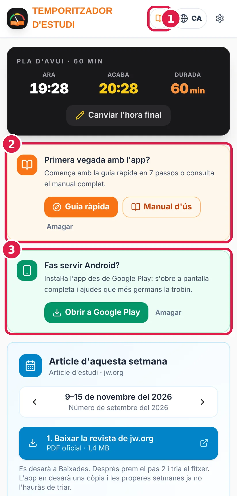
Pantalla d’inici.
Botó del llibre: obre aquest manual en qualsevol moment.
«Primera vegada amb l’app?»: obre la guia ràpida o el manual. Quan ja coneguis l’app, prem Amagar.
«Fas servir Android?» (només en mòbils Android que fan servir el navegador): instal·la l’app des de Google Play. També es pot amagar.
Més avall hi trobaràs:
Pla d’avui: l’hora actual, l’hora a què acaba l’estudi i la seva durada.
Article d’aquesta setmana: per baixar la revista i obrir-la (apartat 4).
Visita del superintendent de circuit: l’interruptor per a l’estudi de 30 minuts (apartat 13).
Configuració de l’estudi: un resum de la teva configuració, amb l’enllaç Canviar.
Al final, els enllaços a la privadesa, el manual, Google Play i l’historial d’estudis.
A dalt també hi ha l’idioma (CA) i la configuració⚙.
4Carregar l’article de la setmana
La targeta «Article d’aquesta setmana» mostra la setmana actual (per exemple, 9–15 de novembre del 2026) i el número de La Torre de Guaita que la conté. Amb les fletxes ‹› pots triar una altra setmana.
«1. Baixar la revista de jw.org» obre el PDF oficial del número que correspon. A Android es desa a Baixades; a l’iPhone, prem Comparteix → «Desa a Fitxers».
«2. Triar el PDF baixat»: selecciona aquest fitxer. L’aplicació busca dins la revista l’article de la setmana triada i l’analitza. Després de prémer el pas 1, quan tornes a l’app aquest botó es posa verd («Ja s’ha baixat? Toca aquí per obrir-lo»): n’hi ha prou amb un toc.
La Torre de Guaita es baixa en l’idioma de l’aplicació. Si l’aplicació està en català, es baixa l’edició en català; si està en castellà, l’edició en castellà, i així amb tots els idiomes. Per baixar-ne un altre idioma, canvia primer l’idioma de l’aplicació (apartat 14). En portuguès, es baixa l’edició de Portugal o la del Brasil, segons el que hagis triat.
L’aplicació desa una còpia de la revista. Les setmanes següents del mateix número s’obren directament amb «Obrir l’article d’aquesta setmana», sense tornar a baixar res. Les revistes desades s’esborren soles 3 mesos després de la seva última setmana.
A l’ordinador també pots arrossegar el PDF a qualsevol lloc de la pantalla d’inici (apareix l’avís «Deixa anar aquí el PDF») o triar la carpeta on deses les revistes, i l’aplicació les trobarà sola.
Diu que la revista encara no està publicada? jw.org publica cada número unes setmanes abans. Si tries una setmana molt llunyana, potser encara no està disponible.
5El resum i el pla de l’estudi
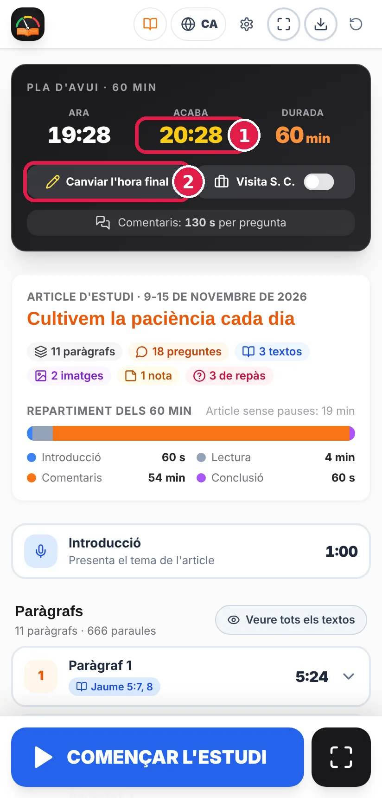
El pla d’avui.
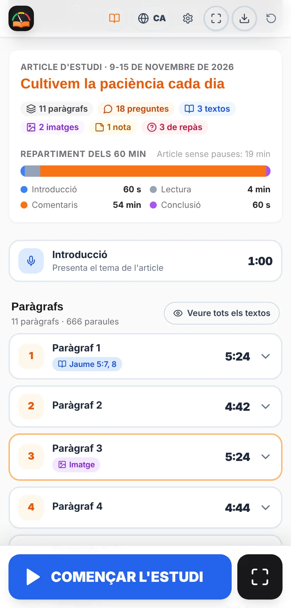
El resum de l’article.
Hora final: l’hora a què acaba l’estudi.
«Canviar l’hora final»: fes-lo servir quan el discurs públic acaba tard (mira el requadre de sota).
Quan s’ha de canviar l’hora final? La reunió dura 1 hora i 45 minuts: càntic i oració (5 min), discurs públic (30 min), càntic (5 min), estudi de La Torre de Guaita (60 min) i càntic i oració final (5 min).
Si el discurs acaba tard, aquests minuts es treuen de La Torre de Guaita. Abans de començar l’estudi, toca «Canviar l’hora final» i escriu l’hora a què ha d’acabar l’estudi perquè la reunió acabi a l’hora (5 minuts abans del final, per al càntic i l’oració). Tot es recalcula per acabar a aquella hora.
Si el discurs acaba a temps o abans, no canviïs res: l’estudi dura els seus 60 minuts i la reunió pot acabar una mica abans, però mai després. Per això l’aplicació mai no allarga l’estudi més del que s’ha configurat.
A sota, el resum de l’article mostra:
El títol i la setmana.
Quants paràgrafs, preguntes, textos, imatges i notes té.
Una barra de colors amb el repartiment del temps: IntroduccióLecturaComentarisConclusió.
Al pla també hi veuràs «Comentaris: X s per pregunta»: el temps mitjà per respondre cada pregunta.
Si l’article no cap en el temps triat, apareix l’avís «No hi cap». Pots allargar la durada o triar una lectura més ràpida a Configuració.
6La llista de paràgrafs
Cada paràgraf apareix en una línia amb el seu número i el seu temps previst. Toca un paràgraf per obrir-lo.
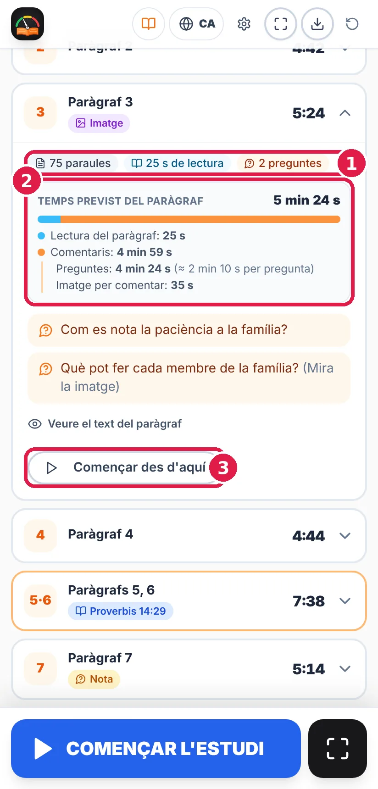
Un paràgraf obert.
Dades del paràgraf, cadascuna amb el seu color: paraules (gris), temps de lectura (blau) i preguntes (taronja). Durant l’estudi també hi apareix l’hora prevista (lila).
Temps previst del paràgraf: el total i com es reparteix. La barra mostra la lectura del paràgraf (blau), els comentaris (taronja) i, als paràgrafs llargs, un extra per a més comentaris (verd). Si hi ha un text per llegir, una imatge o una nota, els comenta l’auditori: apareixen dins dels comentaris, sota les preguntes (per exemple «Text per llegir: 35 s»). Les parts sumen el total.
«Començar des d’aquí»: si l’estudi ja ha començat (per exemple, arribes tard), salta a aquest paràgraf.
Les etiquetes de colors avisen del que s’ha de tenir en compte:
Etiqueta
Què vol dir
Jaume 5:7, 8
Hi ha un text bíblic per llegir.
Imatge
La pregunta parla d’una imatge de l’article.
Nota
Hi ha una nota per comentar.
★ Idea important
La pregunta esmenta un requadre o una idea entre cometes.
Amb «Veure el text del paràgraf» pots llegir el text per preparar els temps. Per dirigir, fes servir sempre la publicació original.
Els paràgrafs que comparteixen pregunta (per exemple, «5, 6») van junts, i el botó Següent salta el grup sencer.
7Dirigir l’estudi pas a pas
Recomanat: durant l’estudi fes servir el mode presentació (apartat 9). Aquí s’explica com funciona; és igual a les dues vistes.
Al mòbil, els botons principals sempre són a baix:
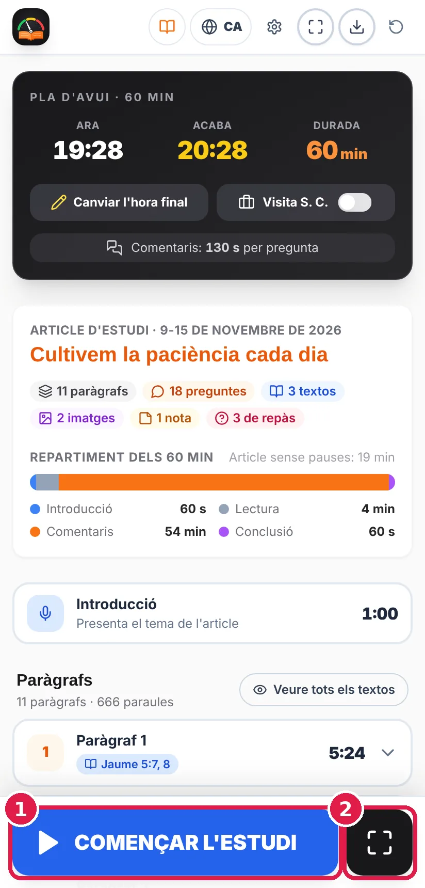
Abans de començar.
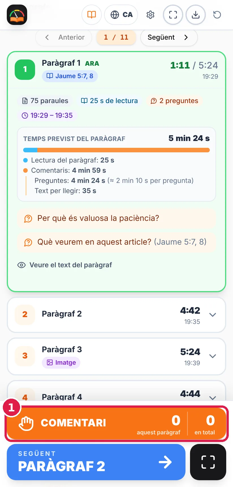
Durant un paràgraf.
Botó blau gran: et diu què ve després. Prem-lo cada vegada que passis a una altra part: Començar l’estudi → Paràgraf 1 → Paràgraf 2 → … → Repàs → Conclusió → Acabar l’estudi.
Botó negre⛶: obre el mode presentació.
Durant els paràgrafs també apareix el botó taronja ✋ COMENTARI: prem-lo cada vegada que algú comenta. Al final veuràs quants comentaris hi ha hagut.
Introducció. Prem «Començar l’estudi». Comencen el cronòmetre general i el de la introducció.
Paràgrafs. Prem Següent en començar cada paràgraf. Veuràs el temps que porta sobre el previst (per exemple, 1:11 / 5:43) i el color (apartat 8).
Preguntes de repàs. Després de l’últim paràgraf vénen les preguntes del requadre final.
Conclusió. Dura just el que queda fins a l’hora final: si sobra temps, l’aprofita tot, encara que sigui més que el minut de la Configuració, i si en queda menys, s’escurça. Si es passa l’hora final, es posa en vermell.
Acabar l’estudi. S’atura el cronòmetre i es desa l’informe de l’estudi (apartat 15).
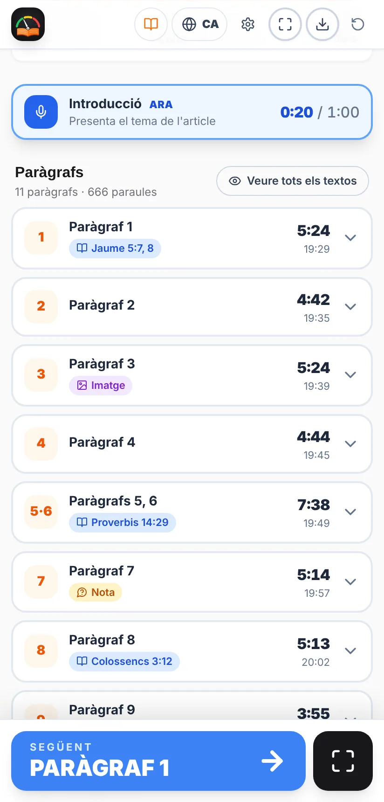
Introducció en curs.
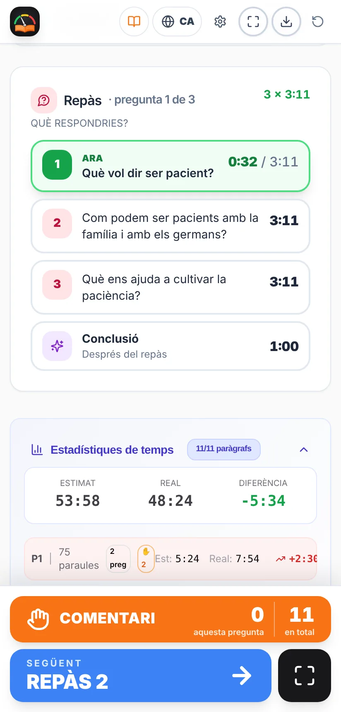
Preguntes de repàs.
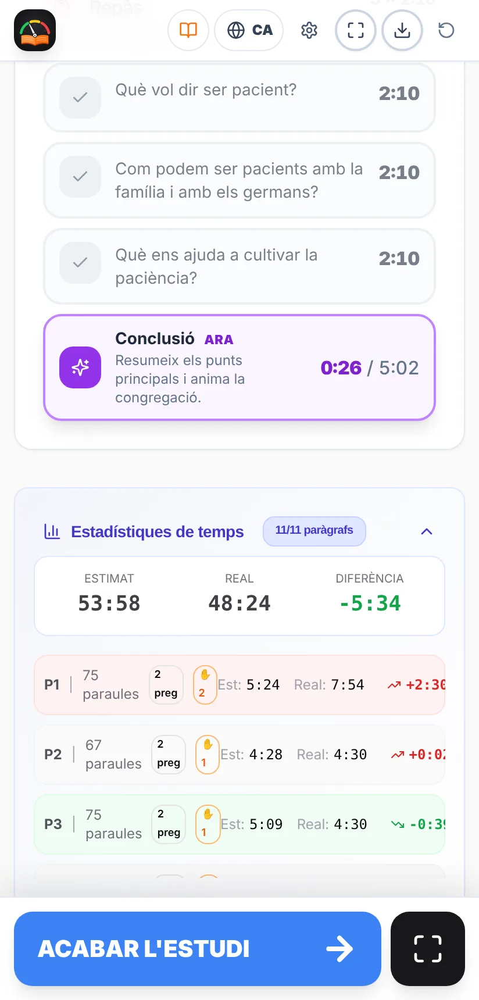
Conclusió.
Amb el botó ⏸ del pla pots pausar el cronòmetre si hi ha una interrupció. En pausa s’atura el rellotge de la part en curs, però l’hora final no es mou: el temps restant continua baixant, perquè la reunió acaba a la seva hora.
8Els colors: verd, groc i vermell
La targeta del que està en curs (paràgraf, introducció, pregunta de repàs o conclusió) canvia de color segons el temps que porta:
Color
Quan
Què fer
A TEMPS
Fins al temps previst.
Tot bé: continua així.
PRÒRROGA
S’ha passat del seu temps, però no més d’un 30 %.
Ves tancant els comentaris.
EXCEDIT
Més d’un 30 % per sobre del previst.
Passa al paràgraf següent.
A temps.
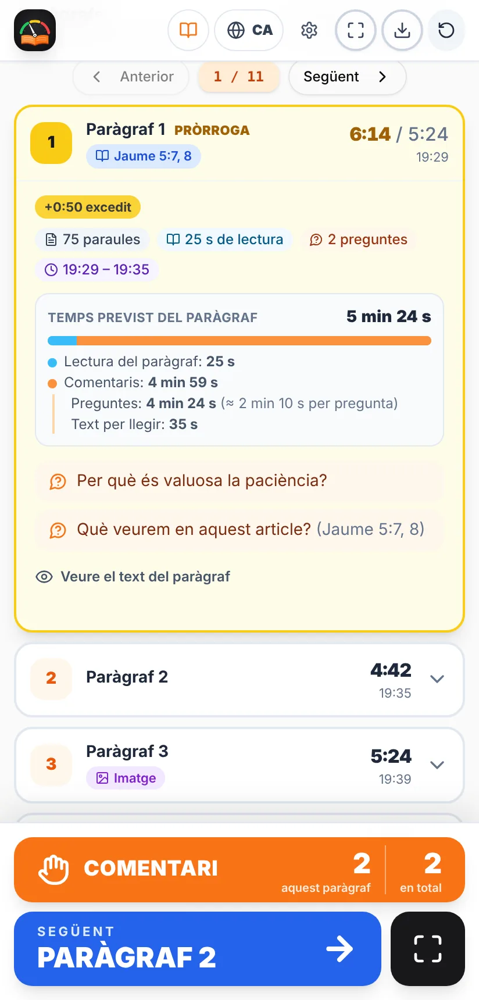
Pròrroga, amb el temps que s’ha excedit.
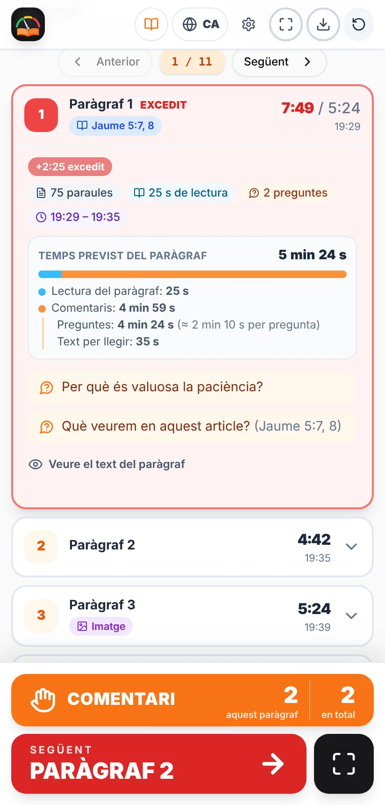
Excedit.
En els últims 5 minuts de l’estudi els paràgrafs i les preguntes de repàs no tenen pròrroga: passen directament de verd a vermell, per no menjar-se el temps del final. La conclusió sempre conserva la seva pròrroga.
Si un tram s’allarga, no passa res: en prémer Següent, l’aplicació torna a repartir el temps que queda entre el que falta, per acabar a l’hora.
El botó «Següent» també t’avisa
Quan el tram en curs passa a vermell, el botó gran per avançar també canvia, perquè el vegis sense buscar-lo:
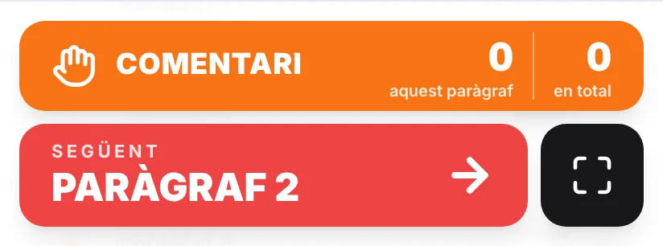
En vermell: encara es pot recuperar.
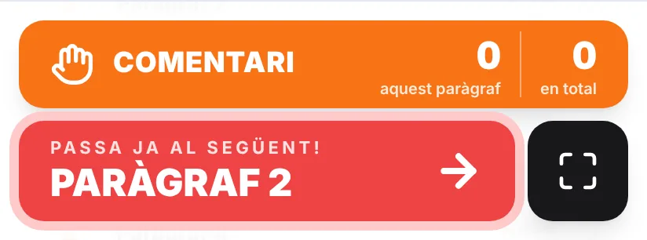
Parpellejant: passa ja al següent.
Botó vermell: el tram s’ha passat de temps, però encara es pot recuperar en el que falta. Ves tancant els comentaris.
Botó vermell que parpelleja amb «Passa ja al següent!»: ja no queda d’on treure temps (quedarien menys de 30 segons per cada pregunta que falta, o ets als últims 5 minuts). Passa al següent tan aviat com puguis.
Al mode presentació el botó es torna blanc amb lletres vermelles, perquè es vegi bé sobre qualsevol color de fons.
Si no el vols, desactiva’l a Configuració → Avisos → «Botó «Següent» en vermell».
9El mode presentació
És la manera recomanada de dirigir l’estudi. Mostra només el necessari, amb lletres i botons grans, i el color et diu d’un cop d’ull com vas de temps.
S’obre amb el botó ⛶ de baix i es tanca amb la ✕ de dalt (o amb el botó «enrere» del mòbil, sense sortir de l’app).
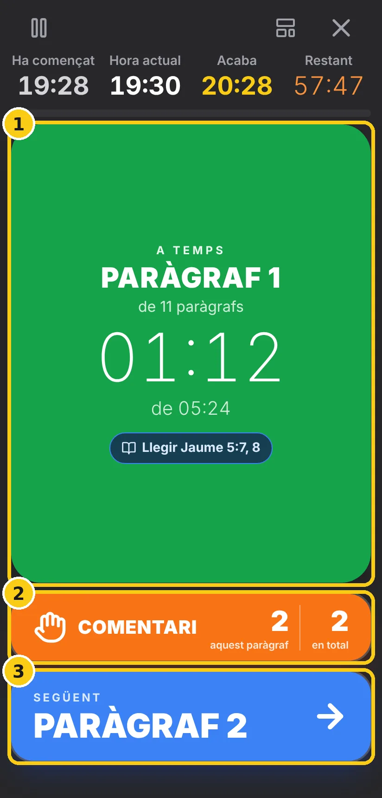
El mode presentació durant un paràgraf.
Requadre de color: on ets (per exemple, Paràgraf 1), el cronòmetre d’aquella part i el seu temps previst. Verd, groc o vermell segons com vagis.
Comentari: prem-lo cada vegada que algú comenta. A l’esquerra veus els comentaris d’aquest paràgraf (o d’aquesta pregunta) i a la dreta els del total.
Següent: passa a la part següent. El botó diu què ve després.
A dalt veus a quina hora ha començat l’estudi, l’hora actual, l’hora a què acaba i el temps que queda.
Hi ha tres dissenys. Es canvien amb el botó ▦ de dalt o a Configuració → Pantalla:
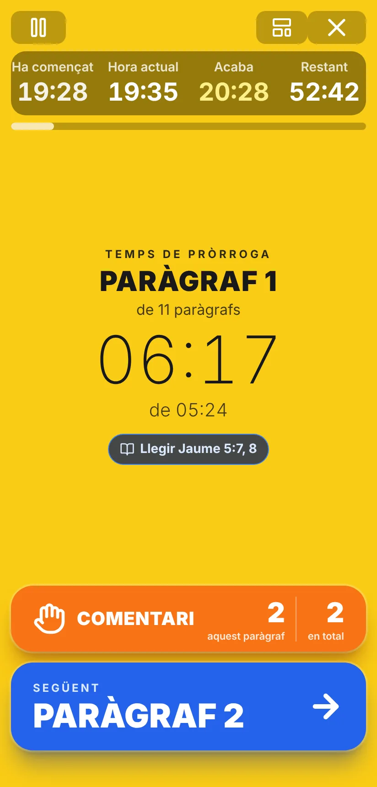
Semàfor: tota la pantalla canvia de color.
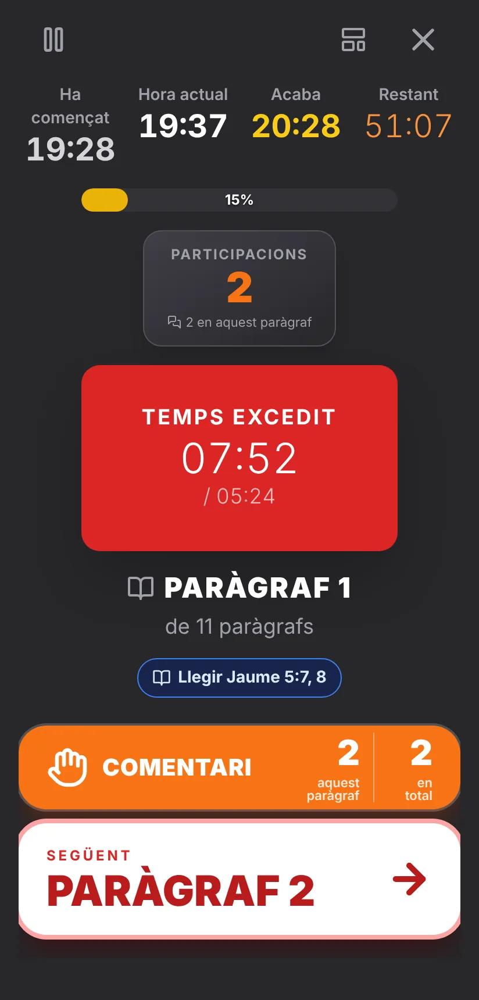
Clàssic: amb el comptador de comentaris.
Al final, el botó gran diu «Acabar l’estudi» i, després, «Veure l’informe».
10Com es calculen els temps
Lectura de cada paràgraf = les seves paraules ÷ la velocitat de lectura (150, 180 o 210 paraules per minut). Cada text bíblic, imatge, nota o idea important suma a més el temps per resposta (mínim 30 segons; per defecte 35) com a comentari, perquè és l’auditori qui el llegeix o el comenta.
Introducció i conclusió tenen reservat el temps de la Configuració (1 minut cadascuna per defecte). La conclusió s’ajusta a l’hora final: si en acabar el repàs sobra temps, se’l queda tot; si en falta, s’escurça.
Comentaris: la resta del temps es reparteix entre totes les preguntes. Els paràgrafs llargs o agrupats en reben una mica més (l’«extra» verd de l’apartat 6).
Durant l’estudi: cada vegada que prems Següent, es recalcula el que queda per acabar a l’hora.
Exemple: en un estudi de 60 minuts amb 11 paràgrafs i 21 preguntes, uns 7 minuts són de lectura, 2 d’introducció i conclusió, i uns 51 de comentaris: una mica més de 2 minuts per pregunta.
11Configuració
Toca ⚙ a dalt a la dreta. La configuració es desa al teu dispositiu i està organitzada en quatre pestanyes:
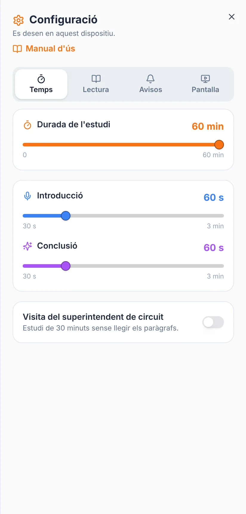
Temps
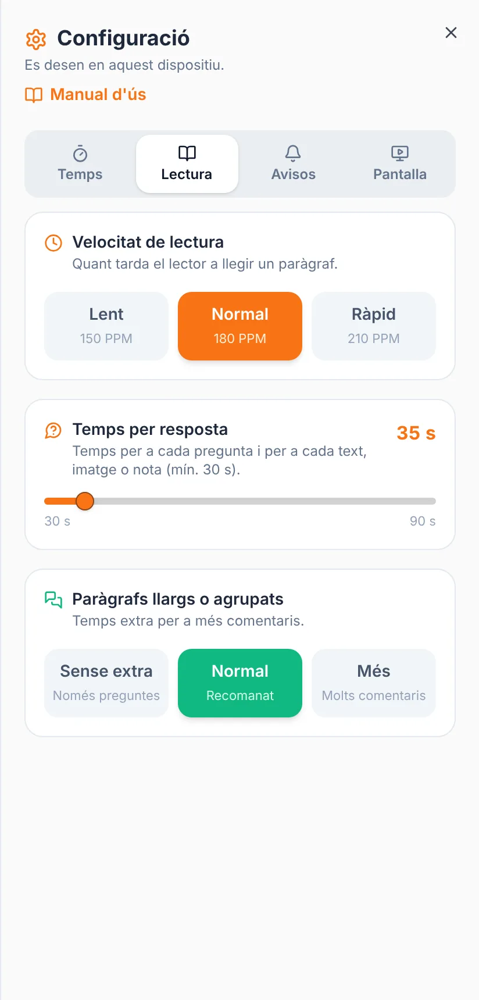
Lectura
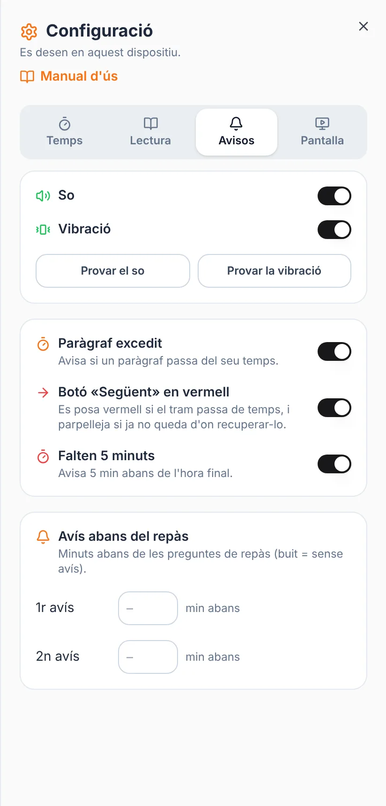
Avisos
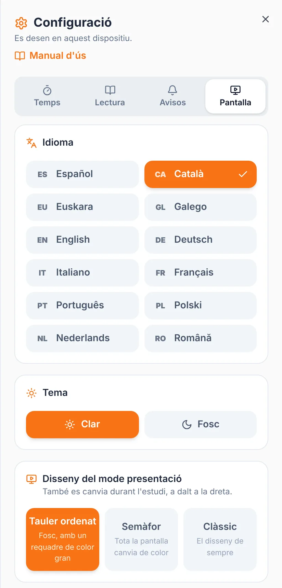
Pantalla
Pestanya
Què pots canviar
Temps
Durada de l’estudi (fins a 60 min). Durada de la introducció i de la conclusió (de 30 s a 3 min). Visita del superintendent de circuit.
Lectura
Velocitat de lectura del lector: Lent (150), Normal (180) o Ràpid (210 paraules/min). Temps per resposta (de 30 a 90 s; també es fa servir per a cada text, imatge, nota o idea important). Paràgrafs llargs o agrupats: Sense extra, Normal o Més comentaris.
Avisos
So i vibració (amb botons per provar-los). Avís de paràgraf excedit, avís de «falten 5 minuts» i fins a dos avisos abans del repàs.
Pantalla
Idioma, tema clar o fosc (amb quatre variants de fosc) i el disseny del mode presentació.
Si canvies la velocitat de lectura o el temps per resposta amb l’estudi en marxa, s’aplicarà al proper estudi.
12Avisos de so i vibració
Paràgraf excedit: sona quan el paràgraf en curs es passa del seu temps.
Falten 5 minuts: 5 minuts abans de l’hora final, amb so, vibració i un missatge a la pantalla.
Abans del repàs: escriu quants minuts abans de les preguntes de repàs vols un avís (per exemple, 10 i 5). Deixa-ho buit si no el vols.
Poc temps per al repàs: si queden menys de 20 segons per pregunta de repàs, l’aplicació t’ho adverteix.
Botó «Següent» en vermell: el botó per avançar es posa vermell quan el tram es passa de temps i parpelleja quan ja no queda d’on recuperar-lo (apartat 8).
Comprova que el mòbil no està en silenci si vols sentir els avisos. La vibració funciona a Android; a l’iPhone depèn del navegador.
13Visita del superintendent de circuit
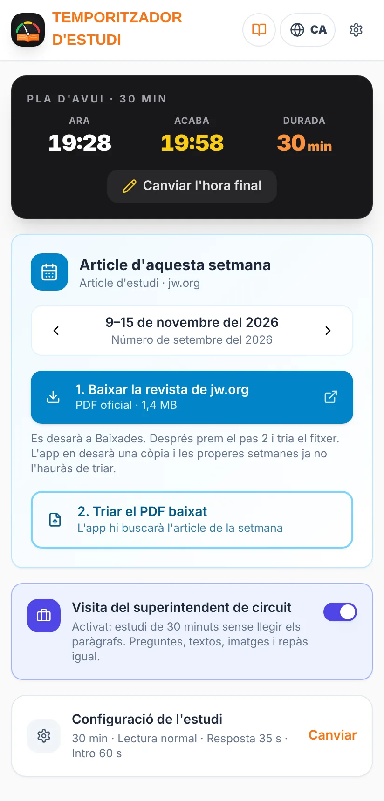
Interruptor activat: estudi de 30 minuts.
La setmana de la visita, activa l’interruptor «Visita del superintendent de circuit» a la pantalla d’inici (o a Configuració → Temps). L’estudi passa a durar 30 minuts i no es llegeixen els paràgrafs: es mantenen les preguntes, els textos bíblics, les imatges i el repàs. Recorda desactivar-lo després de la visita.
Aquella setmana no hi ha lectura del paràgraf. Al temps previst de cada paràgraf, els textos per llegir, les imatges i les notes apareixen dins dels comentaris, per exemple «Text per llegir» o «Imatge per comentar» (en plural si n’hi ha més d’un).
14Idiomes
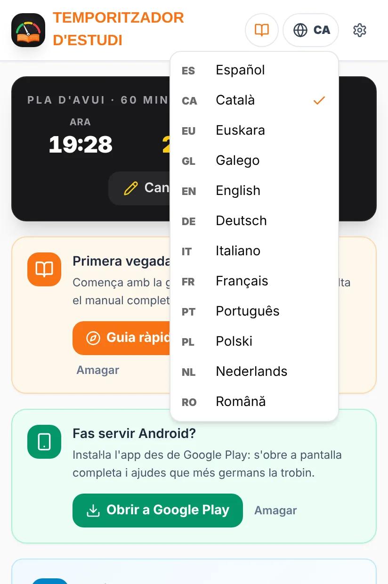
Menú d’idioma.
L’aplicació funciona en castellà, català, basc, gallec, anglès, alemany, italià, francès, portuguès, polonès, neerlandès i romanès. Canvia’l amb el botó del globus, a dalt, o a Configuració → Pantalla. En canviar l’idioma:
Tota l’aplicació apareix en aquell idioma, amb les seves dates i hores.
El botó de jw.org baixa La Torre de Guaita en aquell mateix idioma. L’idioma de l’aplicació decideix l’idioma de la revista.
En portuguès, l’aplicació pregunta una vegada si prefereixes l’edició de Portugal o la del Brasil. Ho pots canviar després a Configuració → Pantalla.
Aquest manual també està disponible en tots aquests idiomes: fes servir els botons d’idioma de la part de dalt.
15En acabar: l’informe i l’historial
En prémer «Acabar l’estudi», l’aplicació desa un informe amb els temps de cada part. Et serveix per veure què s’ha allargat i millorar la propera vegada.
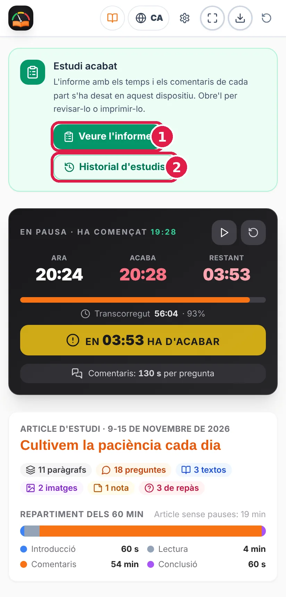
A dalt apareix la targeta «Estudi acabat».
Veure l’informe: obre l’informe d’aquest estudi en una pestanya a part.
Historial d’estudis: obre la llista de tots els estudis desats.
L’informe
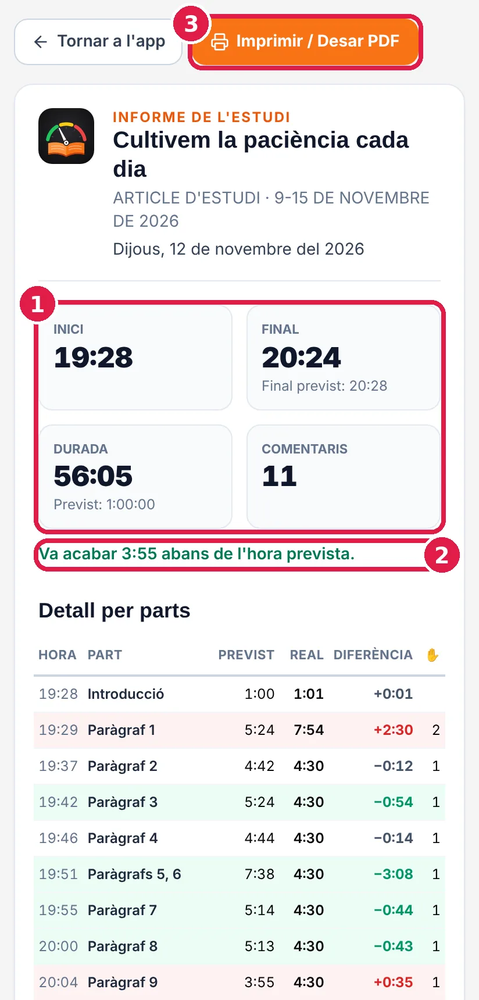
Part de dalt de l’informe.
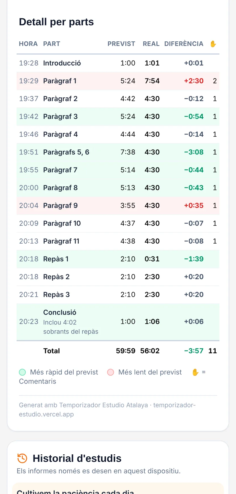
La taula amb cada part.
Inici, final i durada de l’estudi, amb l’hora final prevista i el total de comentaris.
Resum en una frase, per exemple «Va acabar 3:57 abans de l’hora prevista» (en verd) o «després» (en vermell).
Imprimir / Desar PDF: per imprimir-lo en paper o desar-lo com a fitxer.
La taula té una fila per cada part: introducció, cada paràgraf, cada pregunta de repàs i conclusió. A cada fila veuràs:
Hora a què va començar aquella part.
Previst i Real: el temps del pla i el que realment s’ha fet servir.
Diferència: en verd si ha anat més ràpid i en vermell si s’ha allargat.
✋: els comentaris marcats.
A l’ordinador i en imprimir també hi apareixen les paraules i les preguntes de cada paràgraf. L’informe imprès cap en un full.
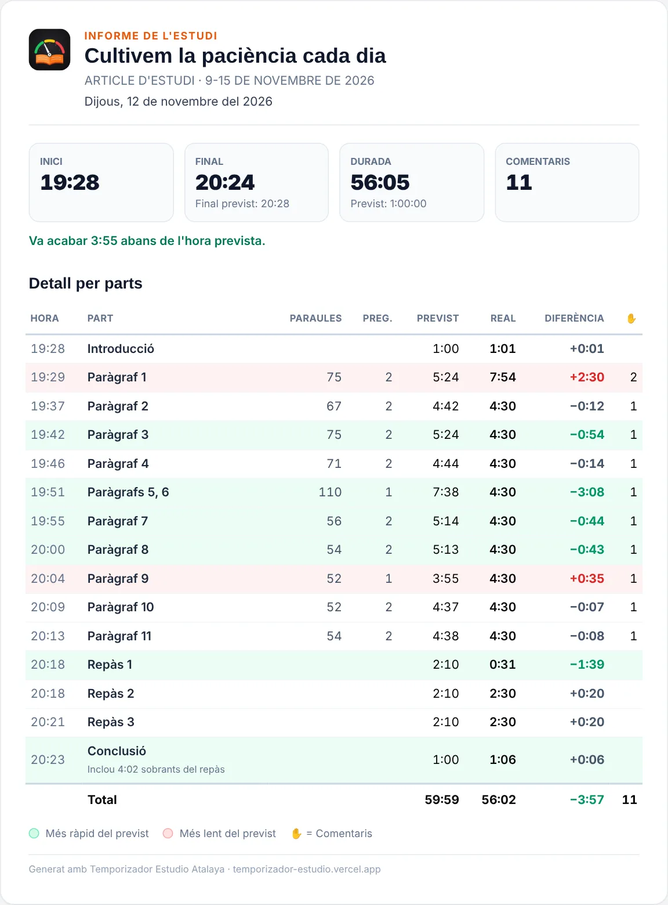
L’informe complet, tal com es veu a l’ordinador o imprès.
L’historial d’estudis
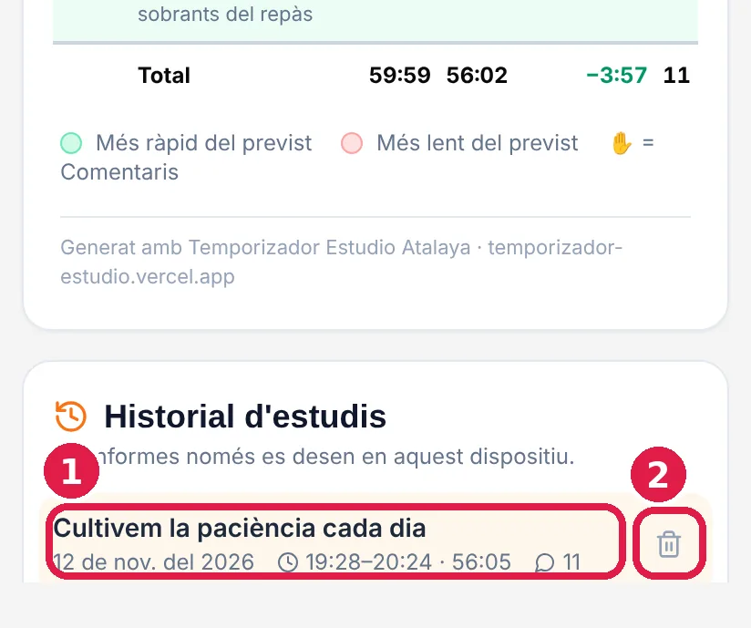
Llista d’estudis desats, sota l’informe.
Toca un estudi per veure’n l’informe. Es mostren la data, les hores, la durada i els comentaris.
Paperera: per esborrar un informe. Prem una vegada i després confirma amb «Eliminar?».
Els informes només es desen en aquest dispositiu, mai a internet. Es desen fins a 100 estudis. Si esborres les dades del navegador o de l’app, l’historial es perd.
També pots obrir l’historial des de l’enllaç «Historial d’estudis» al final de la pantalla d’inici.
Altres opcions
Sota el pla també hi apareixen les estadístiques de temps de cada paràgraf.
Amb el botó exportar⬇ de dalt pots desar el pla de l’estudi com a imatge o PDF.
Per preparar un altre estudi, prem començar de nou↻.
16Preguntes freqüents
Puc dirigir llegint els paràgrafs i les preguntes a l’aplicació?
No. L’aplicació els mostra només per calcular els temps. Per dirigir, fes servir sempre JW Library o la revista La Torre de Guaita impresa.
Per què s’ha baixat La Torre de Guaita en un altre idioma?
La revista es baixa en l’idioma de l’aplicació. Canvia l’idioma amb el botó del globus i torna a prémer «Baixar la revista de jw.org».
Diu que no reconeix el format de l’article.
Fes servir el PDF oficial de La Torre de Guaita, edició d’estudi, baixat de jw.org (el botó «Baixar la revista de jw.org» ho fa per tu). Els PDF escanejats o fets amb captures no es poden llegir.
No troba l’article de la setmana dins la revista.
Comprova que la setmana triada correspon a aquest número de la revista. Si no, l’aplicació mostra l’article més proper i et deixa triar una altra setmana.
Necessito internet durant l’estudi?
Només per baixar la revista. Un cop carregat l’article, el temporitzador funciona sense connexió.
He arribat tard o he començat amb retard, què faig?
Obre el paràgraf pel qual aneu i prem «Començar des d’aquí». L’aplicació repartirà el temps que queda.
El discurs públic ha acabat tard.
Abans de començar, toca «Canviar l’hora final» i escriu l’hora a què ha d’acabar l’estudi perquè la reunió acabi a temps. L’aplicació ho escurça tot per acabar a aquella hora. Aquesta opció només escurça l’estudi: mai no l’allarga.
No sonen els avisos.
Revisa a Configuració → Avisos que estiguin activats, prem «Provar el so» i comprova que el mòbil no estigui en silenci.
Quines dades desa l’aplicació?
Només la teva configuració i les revistes que tries desar, i sempre al teu dispositiu. No hi ha comptes ni s’envien dades a cap servidor. Més informació a la política de privadesa.
On veig els estudis d’altres setmanes?
A l’historial d’estudis: prem «Historial d’estudis» en acabar un estudi o a l’enllaç del final de la pantalla d’inici.
Puc esborrar un informe?
Sí. A l’historial, prem la paperera de l’estudi i després confirma amb «Eliminar?».
Per què la conclusió ha durat més del previst?
Si en acabar el repàs sobra temps, la conclusió es queda aquest temps per acabar a l’hora. L’informe ho indica sota «Conclusió».